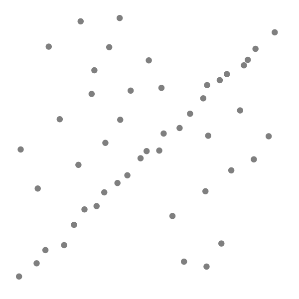
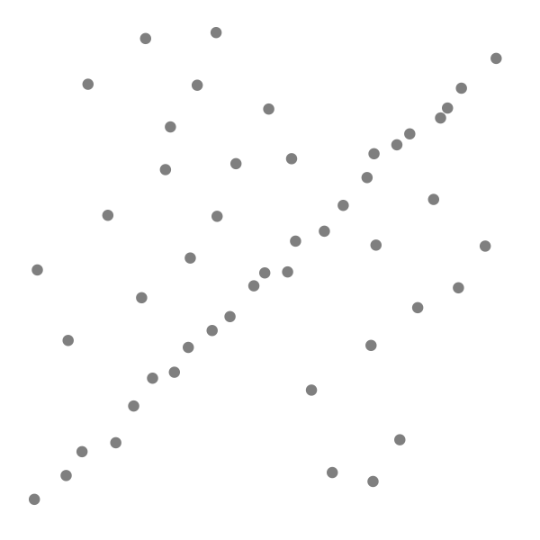
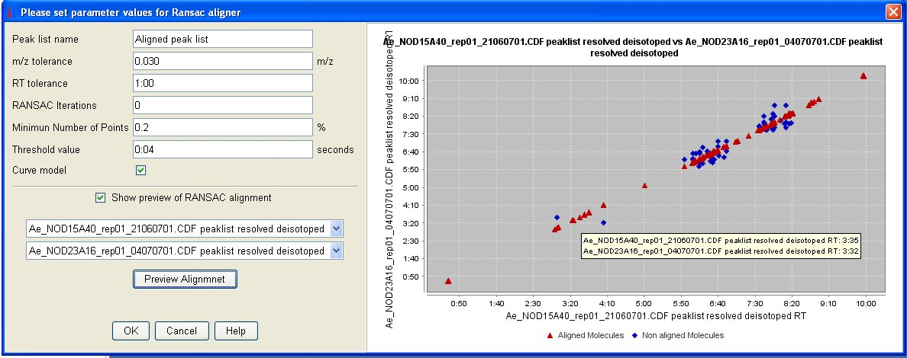

|
 A data set with many outliers for which a line has to be fitted.
|
Fitted line with RANSAC, outliers have no influence on the result.
|
|
|
|
http://en.wikipedia.org/wiki/RANSAC
RANSAC is an abbreviation for "RANdom SAmple Consensus". It is an iterative method to estimate parameters of a mathematical model from a set of observed data which contains outliers. It is a non-deterministic algorithm in the sense that it produces a reasonable result only with a certain probability, with this probability increasing as more iterations are allowed. The algorithm was first published by Fischler and Bolles in 1981.
A basic assumption is that the data consists of "inliers", i.e., data whose distribution can be explained by some set of model parameters, and "outliers" which are data that do not fit the model. In addition to this, the data can be subject to noise. The outliers can come, e.g., from extreme values of the noise or from erroneous measurements or incorrect hypotheses about the interpretation of data. RANSAC also assumes that, given a (usually small) set of inliers, there exists a procedure which can estimate the parameters of a model that optimally explains or fits this data.
The input to the RANSAC algorithm is a set of observed data values, a parametrized model which can explain or be fitted to the observations, and some confidence parameters.
RANSAC achieves its goal by iteratively selecting a random subset of the original data. These data are hypothetical inliers and this hypothesis is then tested as follows:
A model is fitted to the hypothetical inliers, i.e. all free parameters of the model are reconstructed from the data set.
All other data are then tested against the fitted model and, if a point fits well to the estimated model, also considered as a hypothetical inlier.
The estimated model is reasonably good if sufficiently many points have been classified as hypothetical inliers.
The model is re-estimated from all hypothetical inliers, because it has only been estimated from the initial set of hypothetical inliers.
Finally, the model is evaluated by estimating the error of the inliers relative to the model.
This procedure is repeated a fixed number of times, each time producing either a model which is rejected because too few points are classified as inliers or a refined model together with a corresponding error measure. In the latter case, we keep the refined model if its error is lower than the last saved model.
|
 A data set with many outliers for which a line has to be fitted.
|
Fitted line with RANSAC, outliers have no influence on the result.
|
|
|
|
In this case each point represents the retention time of one peak from one sample versus the retention time of a possible aligned peak from another sample. All the points represent all possible alignments. We consider that the relative distances in terms of retention time between the peaks are constant. Even in the case there is a shift in the retention time of the peaks of two samples, the points which represent the aligned peaks between these two samples, will form a line.
Ransac algorithm is done for each pair combination of samples. That means the time cost of the algorithm is an almost quadratic (N*(N-1)/2) function of the number of samples, and grows very quickly for bigger values of N (where N is the number of samples).
It is specially appropriate for the alignment of samples with a shift in the retention time.
The generic RANSAC algorithm, in pseudocode works as follows:
input:
data - a set of observations
model - a model that can be fitted to data
n - the minimum number of data required to fit the model
k - the maximum number of iterations allowed in the algorithm
t - a threshold value for determining when a datum fits a model
d - the number of close data values required to assert that a model fits well to data
output:
best_model - model parameters which best fit the data (or nil if no good model is found)
best_consensus_set - data point from which this model has been estimated
best_error - the error of this model relative to the data
iterations := 0
best_model := nil
best_consensus_set := nil
best_error := infinity
while iterations < k
maybe_inliers := n randomly selected values from data
maybe_model := model parameters fitted to maybe_inliers
consensus_set := maybe_inliers
for every point in data not in maybe_inliers
if point fits maybe_model with an error smaller than t
add point to consensus_set
if the number of elements in consensus_set is > d
(this implies that we may have found a good model,
now test how good it is)
better_model := model parameters fitted to all points in consensus_set
this_error := a measure of how well better_model fits these points
if this_error < best_error
(we have found a model which is better than any of the previous ones,
keep it until a better one is found)
best_model := better_model
best_consensus_set := consensus_set
best_error := this_error
increment iterations
return best_model, best_consensus_set, best_errorPossible variants of the RANSAC algorithm includes
Break the main loop if a sufficiently good model has been found, that is, one with sufficiently small error. May save some computation time at the expense of an additional parameter.
Compute this_error
directly from maybe_model
without re-estimating a model from the consensus set. May save some
time at the expense of comparing errors related to models which are
estimated from a small number of points and therefore more sensitive
to noise.
The values of parameters t and d have to be determined from specific requirements related to the application and the data set, possibly based on experimental evaluation. The parameter k (the number of iterations), however, can be determined from a theoretical result. Let p be the probability that the RANSAC algorithm in some iteration selects only inliers from the input data set when it chooses the n points from which the model parameters are estimated. When this happens, the resulting model is likely to be useful so p gives the probability that the algorithm produces a useful result. Let w be the probability of choosing an inlier each time a single point is selected, that is,
w = number of inliers in data / number of points in data
A common case is that w is not well known beforehand, but some rough value can be given. Assuming that the n points needed for estimating a model are selected independently, wn is the probability that all n points are inliers and 1 − wn is the probability that at least one of the n points is an outlier, a case which implies that a bad model will be estimated from this point set. That probability to the power of k is the probability that the algorithm never selects a set of n points which all are inliers and this must be the same as 1 − p. Consequently,
which, after taking the logarithm of both sides, leads to

It should be noted that this result assumes that
the n data
points are selected independently, that is, a point which has been
selected once is replaced and can be selected again in the same
iteration. This is often not a reasonable approach and the derived
value for k
should be taken as an upper limit in the case that the points are
selected without replacement. For example, in the case of finding a
line which fits the data set illustrated in the above figure, the
RANSAC algorithm typically chooses 2 points in each iteration and
computes maybe_model
as the line between the points and it is then critical that the two
points are distinct.
To gain additional confidence, the standard deviation or multiples thereof can be added to k. The standard deviation of k is defined as
This aligner
requires the next parameters:
"Peak
list name"
This is the suffix
to identify the new aligned peak list in Peak list frame of
desktop.
"m/z
tolerance"
This value sets the
range, in terms of m/z, to verify for possible peak rows to be
aligned. Maximum allowed m/z difference.
"Retention
time tolerance type"
This value
sets the range, in terms of retention time,
to verify for possible peak rows to be aligned. Maximum allowed
retention time difference.
“RANSAC
Iterations”
Maximum number of
iterations allowed in the algorithm to find the right model
consistent in all the pairs of aligned peaks. When its value is 0,
the number of iterations (k) will be estimate
automatically.
“Minimum
Number of Points”
%
of points required to consider the model valid (d).
“Threshold
value”
Threshold value
(seconds) for determining when a data point fits a model (t).
“Curve model”
Sometimes
the shift in the retention time between the peaks in the samples is
not constant making that the model shape is not a line but a curve in
some specific cases. This option should be selected in these cases.
Parameter setup dialog
|
 |
|
New aligned peak list showing peaks from 3
different samples. |